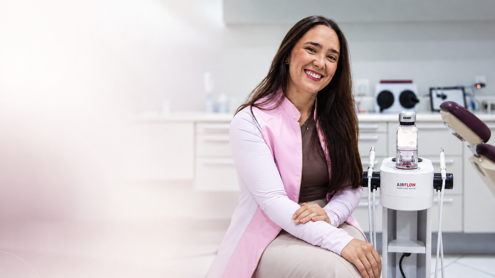

Área de atuação
Dentística restauradora
Cuidados restauradores com atenção à função, à preservação da estrutura dental e à naturalidade do sorriso.
Dra. Jheisy Rodrigues · Cirurgiã-dentista | USP
Naturalidade e saúde para o seu sorriso, com atenção aos detalhes, função e estética em cada cuidado.
Agendamentos pelo WhatsApp · +55 16 98855-7713

Uma experiência odontológica apresentada de forma simples: quem vai te atender, como entrar em contato e o que você precisa saber antes de agendar.
01
Conheça a profissional
Esta área foi preparada para apresentar a trajetória, a formação e a forma de trabalho da Dra. Jheisy com transparência, sem transformar credenciais em excesso de informação.
Cirurgiã-dentista formada pela USP, com atuação em Dentística restauradora e Próteses, unindo naturalidade, saúde, função e cuidado estético.
Formação em Odontologia pela USP.
Registro profissional informado para atendimento no estado de São Paulo.
02
Atendimentos
Atuação voltada à preservação da saúde, função e naturalidade do sorriso, com abordagem cuidadosa e individualizada.
Área de atuação
Cuidados restauradores com atenção à função, à preservação da estrutura dental e à naturalidade do sorriso.
Área de atuação
Reabilitação do sorriso com foco em função, conforto e harmonia, conforme avaliação individual.
Não encontrou o que procura? No contato inicial, você poderá explicar sua necessidade sem precisar fazer autodiagnóstico.
Conversar pelo WhatsApp03
Primeiro contato
Fluxo proposto para validação com a profissional. A página não trata uma mensagem como consulta confirmada.
Envie uma mensagem pelo WhatsApp para solicitar informações e disponibilidade de agenda.
Explique sua dúvida de forma breve. Não é necessário enviar histórico clínico pelo formulário inicial.
A confirmação do horário depende do retorno do canal de atendimento e da disponibilidade de agenda.
Importante: o horário só é confirmado após retorno no WhatsApp e disponibilidade de agenda.
04
Consultório
Fotografias reais do consultório podem mostrar a experiência de forma autêntica — sem recorrer a imagens genéricas de banco.
05
Perguntas frequentes
Informações práticas para facilitar seu primeiro contato. Questões clínicas e indicação de tratamento dependem de avaliação profissional.
Clique em “Agendar pelo WhatsApp” para conversar pelo número +55 16 98855-7713. A mensagem inicia uma solicitação; o horário só fica confirmado após retorno e disponibilidade.
Sim. A proposta do primeiro contato é permitir que você explique sua necessidade e receba orientação sobre o próximo passo, sem transformar o site em ferramenta de diagnóstico.
As áreas de atuação informadas são Dentística restauradora e Próteses. A indicação de cada tratamento depende de avaliação individual.
O endereço ainda não foi confirmado para publicação. A seção de localização está preparada e deve ser ativada quando esse dado for validado.
Contato
Fale diretamente com a Dra. Jheisy pelo WhatsApp para solicitar informações e disponibilidade de agenda.
O envio da mensagem não confirma automaticamente a consulta. O horário depende do retorno e da disponibilidade de agenda.